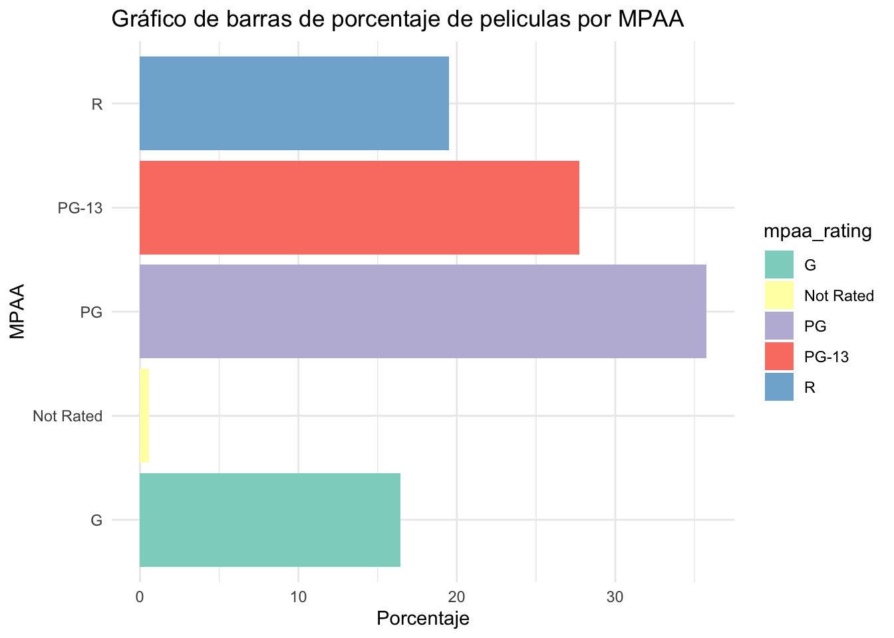

peliculas=c("driver","mike7","destinofinal","frozen","flow")
año=c(2011,2025,2000,2013,2024)
genero=c("accion","cienciafiction","terror","animacion","animacion")Clase teórica Semana 10
data=data.frame(peliculas,año,genero)library(rio)
#export(data,"peliculas.csv") #csv delimitado por comas
#export(data,"peliculas.xlsx") #xlsx para guarr un archivo en exceldata2=import("data/Base_Peliculas_Disney-2.sav")names(data2)[1] "titulo_pelicula" "fecha"
[3] "antigüedad" "genero"
[5] "mpaa_rating" "total_gross"
[7] "inflation_adjusted_gross" "genero2"
[9] "mpaa_rating2" names(data2)[6] <- "ingresos" tail(data2)str(data2)'data.frame': 579 obs. of 9 variables:
$ titulo_pelicula : chr "Snow White and the Seven Dwarfs" "Pinocchio" "Fantasia" "Song of the South" ...
..- attr(*, "format.spss")= chr "A40"
..- attr(*, "display_width")= int 40
$ fecha : Date, format: "1937-12-21" "1940-02-09" ...
$ antigüedad : num 84.9 82.8 82 76 72.7 ...
..- attr(*, "format.spss")= chr "F18.15"
..- attr(*, "display_width")= int 16
$ genero : chr "Musical" "Adventure" "Musical" "Adventure" ...
..- attr(*, "format.spss")= chr "A19"
..- attr(*, "display_width")= int 19
$ mpaa_rating : chr "G" "G" "G" "G" ...
..- attr(*, "format.spss")= chr "A9"
..- attr(*, "display_width")= int 9
$ ingresos : num 1.85e+08 8.43e+07 8.33e+07 6.50e+07 8.50e+07 ...
..- attr(*, "format.spss")= chr "F12.10"
..- attr(*, "display_width")= int 12
$ inflation_adjusted_gross: num 5.23e+09 2.19e+09 2.19e+09 1.08e+09 9.21e+08 ...
..- attr(*, "format.spss")= chr "F13.11"
..- attr(*, "display_width")= int 12
$ genero2 : num 10 3 10 3 8 3 8 8 5 5 ...
..- attr(*, "format.spss")= chr "F2.0"
..- attr(*, "display_width")= int 9
..- attr(*, "labels")= Named num [1:12] 2 3 4 5 6 7 8 9 10 11 ...
.. ..- attr(*, "names")= chr [1:12] "Action" "Adventure" "Black Comedy" "Comedy" ...
$ mpaa_rating2 : num 5 5 5 5 5 NA 5 NA 5 NA ...
..- attr(*, "format.spss")= chr "F1.0"
..- attr(*, "display_width")= int 14
..- attr(*, "labels")= Named num [1:5] 1 2 3 4 5
.. ..- attr(*, "names")= chr [1:5] "R" "PG-13" "PG" "Not Rated" ...table(data2$genero)
Action Adventure Black Comedy
17 40 129 3
Comedy Concert/Performance Documentary Drama
182 2 16 114
Horror Musical Romantic Comedy Thriller/Suspense
6 16 23 24
Western
7 library(dplyr)
Attaching package: 'dplyr'The following objects are masked from 'package:stats':
filter, lagThe following objects are masked from 'package:base':
intersect, setdiff, setequal, uniontabla_frecuencia = data2 %>%
count(genero) %>%
filter(!genero %in% "") #removemos valores perdidos
tabla_frecuenciatabla_porcentajes= data2 %>%
count(genero) %>%
filter(!genero %in% "") %>% #removemos valores perdidos
mutate(porcentaje = n / sum(n) * 100) # Calculamos el porcentaje
tabla_porcentajeslibrary(ggplot2)
ggplot(tabla_porcentajes, aes(x=genero,y=porcentaje, fill=genero))+
geom_bar(stat = "identity")+
coord_flip()+
labs(title = "Gráfico de barras de porcentaje de peliculas por Genero",
x = "Genero",
y = "Porcentaje") +
theme_minimal() + # Tema minimalista
scale_fill_brewer(palette = "Set3") tabla_porcentajes2= data2 %>%
count(mpaa_rating) %>%
filter(!mpaa_rating %in% "") %>% #removemos valores perdidos
mutate(porcentaje = n / sum(n) * 100) # Calculamos el porcentaje
tabla_porcentajes2library(ggplot2)
ggplot(tabla_porcentajes2, aes(x=mpaa_rating,y=porcentaje, fill=mpaa_rating))+
geom_bar(stat = "identity")+
coord_flip()+
labs(title = "Gráfico de barras de porcentaje de peliculas por MPAA",
x = "MPAA",
y = "Porcentaje") +
theme_minimal() + # Tema minimalista
scale_fill_brewer(palette = "Set3") 
mean(data2$ingresos)[1] 64701789summary(data2$ingresos) Min. 1st Qu. Median Mean 3rd Qu. Max.
0 12788864 30702446 64701789 75709033 936662225 data2$antigüedad=as.numeric(data2$antigüedad)summary(data2$antigüedad) Min. 1st Qu. Median Mean 3rd Qu. Max.
5.849 16.714 24.145 24.297 29.582 84.890 ggplot(data2,aes(x=antigüedad))+
geom_histogram()`stat_bin()` using `bins = 30`. Pick better value with `binwidth`.ggplot(data2,aes(y=antigüedad,x=genero))+
geom_boxplot() +
coord_flip()